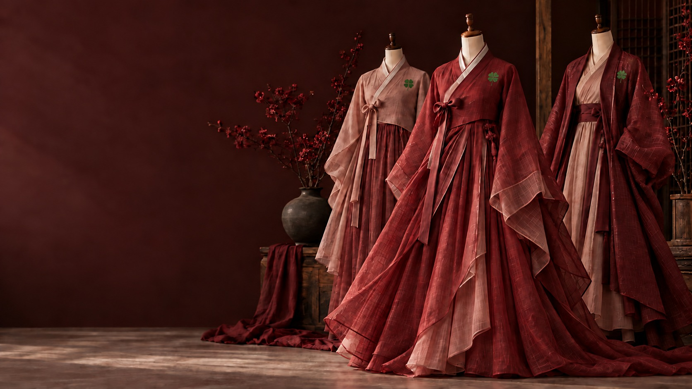
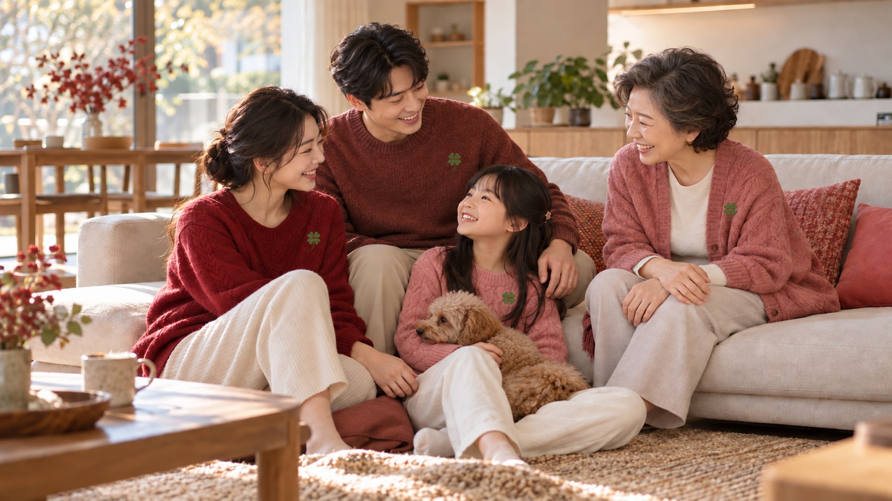
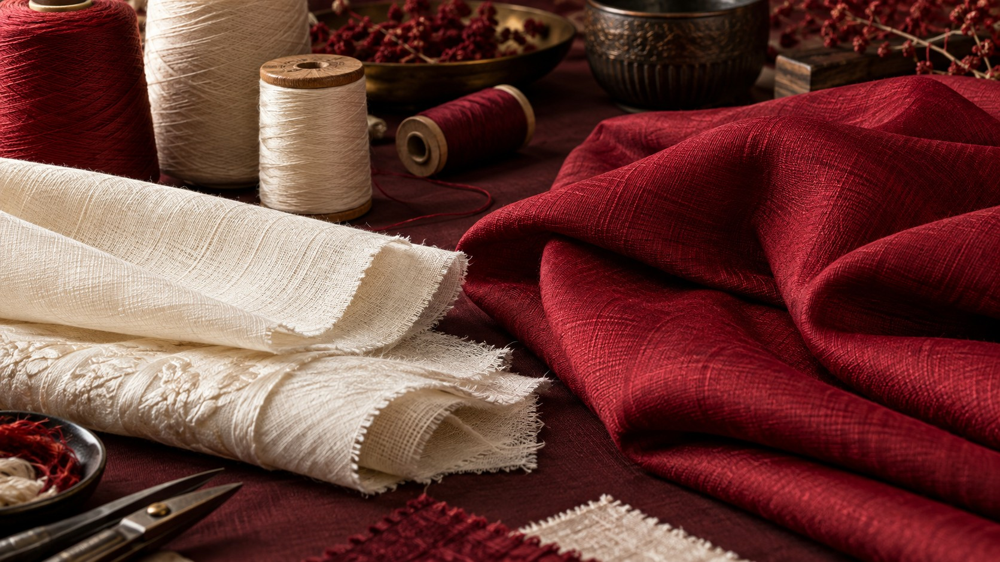

04 / WELLNESS
What Is
Clothing?
Healthy People.
Happier Families.
A Bright Every Day.
Touch the clothing image to see a gentle ripple.
COMFORT · CULTURE · MATERIALS · PERSONAL EXPRESSION
CLOSE TO THE BODY. CLOSE TO LIFE.
Clothing is more than
something we put on.
It is the layer we live with: at home, at work, in care settings, and through each changing chapter of life.
Eating well is part of everyday wellbeing. So is the experience of clothing that feels comfortable, fits its purpose and reflects the person wearing it.
Neipclova’s Wellness direction begins with underwear and outerwear, then extends to accessories, specialty yarns and carefully considered textile treatments.
From the earliest stories of clothing—including Adam and Eve—we draw a simple question: how can what we wear help us feel at ease?
THREE WAYS TO EXPLORE
Made for life.
Chosen with care.

Clothing for Every Chapter
Underwear, outerwear and the everyday environments we live in.
Explore this field
Specialty Yarns & Lasting Comfort
Korean-inspired craft, surface treatments and clothing worth keeping.
Explore this fieldRing & Personal Accessories
A personal conversation about the Neipclova Ring and wearable accessories.
Explore this fieldONE GOOD GARMENT. YOUR OWN.
Wear it well.
Keep it longer.
A personal wardrobe does not need to begin with more. Neipclova values thoughtful fit, meaningful design and garments that people want to care for and wear again.
Our direction connects Korean-inspired craftsmanship with specialty yarn processing and material selection—from polymer-based fibres to natural-derived materials, with the actual composition clearly identified for each product.
Explore materials and lasting comfortTHE QUESTIONS BEHIND A BETTER GARMENT
What should your clothing do?
Feel right against the body
Discuss softness, texture, seams, fit and ease of movement. These are tangible clothing qualities, evaluated with the intended wearer and setting.
Belong to your stage of life
Infancy, childhood, pregnancy, adulthood and later life bring different practical requirements. Care-setting garments need particular attention to dressing, cleaning and local care protocols.
Support careful hygiene
Antibacterial textile performance is a material-specific property requiring suitable tests. A treated fabric should not be assumed to protect its wearer from infection.
Explore textile-treatment considerationsStay part of your life
Care instructions, washing durability, repair and repeated use belong in the design conversation alongside appearance and price.
THE NEIPCLOVA RING
A personal accessory.
A thoughtful conversation.
Neipclova also introduces its Ring within the Wellness conversation. Certain development details are confidential; available product information, materials and fit can be discussed directly.
Our interest includes personal wearing experiences. Health improvement has not been established by the evidence provided for this site; the Ring is not presented as a medical treatment.
Ask about the Neipclova Ring